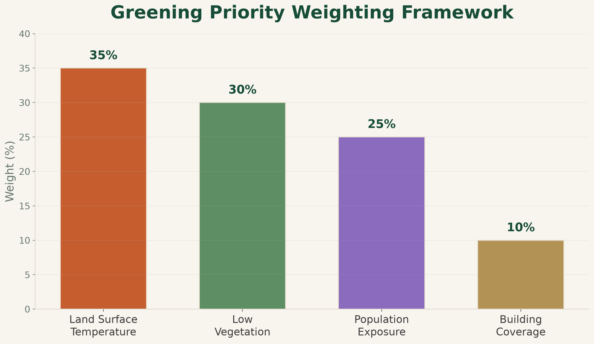

Methods & Data
Cooling Riyadh integrates satellite imagery, population estimates, building footprints, and spatial machine learning within a common 500 m analysis grid.
The workflow preserves the spatial meaning of each dataset while allowing multiple urban indicators to be compared consistently across Riyadh.
Data Sources
Landsat Collection 2 Level-2
Used to derive land surface temperature (LST) and NDVI.
Surface reflectance and surface temperature products were processed with cloud and cloud-shadow masking before the Riyadh mosaics were created.
WorldPop 2026
Used to estimate the spatial distribution of residents across Riyadh.
Population values were summarized into the 500 m analysis grid to provide an estimated population for each cell.
Microsoft Building Footprints
Used to characterize the built environment.
Building polygons were clipped to Riyadh and summarized using building count, total building footprint area, and building coverage percentage.
Riyadh Urban Boundary
The study area was defined using the Riyadh urban boundary extracted from the Copernicus Global Human Settlement Layer Urban Centre Database.
This boundary was used consistently for clipping, raster processing, and final visualization.
Analysis Workflow
Clip, clean, and project the source datasets.
Create a common spatial unit across Riyadh.
Calculate LST, NDVI, population, and building metrics.
Identify recurring urban profiles using unsupervised machine learning.
Combine normalized indicators into a spatial screening score.
Compare urban clusters with High and Very High priority areas.
Priority Score
The final greening priority score combines four normalized indicators.
35% Land Surface Temperature
30% Low Vegetation
25% Population Exposure
10% Building Coverage

These weights are analyst-defined and reflect the project’s research question. They are not statistically estimated model coefficients and should be interpreted as a transparent spatial screening framework.
Machine Learning & AI
K-Means clustering was applied to four standardized variables:
Land Surface Temperature · NDVI · Population · Building Coverage
The algorithm grouped spatial cells according to similarity without using predefined labels.
The resulting urban profiles were then compared with High and Very High greening-priority cells to create the AI-assisted priority interpretation.
The machine-learning analysis supports interpretation of recurring urban conditions. It does not generate or replace the weighted greening priority score.
Important Limitations
Land Surface Temperature
LST represents satellite-derived surface temperature rather than direct air temperature.
Vegetation
NDVI indicates vegetation presence but does not distinguish individual trees from grass, shrubs, or other vegetation.
Population
WorldPop provides modeled population estimates rather than direct census counts for every grid cell.
Buildings
Building footprints describe mapped building geometry but do not directly represent height, occupancy, material, or land use.
Priority Weights
The weighting scheme reflects the analytical objectives of this project and is not statistically optimized.
Intervention Readiness
Priority areas identify locations for further assessment rather than direct planting recommendations.
Local land ownership, utilities, road geometry, water availability, existing projects, and planning constraints should be assessed before implementing any greening intervention.